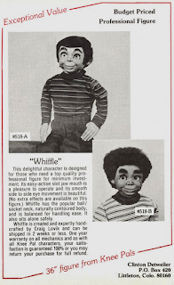

Whiffle
7/22/2012
Question: Hi Clinton! I was just reading your blog on Lovik figures and the 1983 catalog. Quite a few years back someone told me that my Lovik figure (whom I call Yorick Yodelsap, pictured here) was created in 1983. Does he appear in any of the 1983 catalogs that you still have? What name was he called by in the catalog? Bob Albano
* * * * *
From Mr. D: The figure you have was sold by the name of "Whiffle". It was a "stand alone " project in that it was not a part of any series of characters nor was it in any of the Maher Catalogs. We sold it via a small sell-sheet insert (right).The date of 1983 would seem to be correct.
As I recall, Whiffle came about as a result of a conversation I had with Craig about vent figure's mouths that "turn in their own groove" (as some call it). This is when the shape of the face along side the mouth is perfectly circular with the mouth axle positioned in what would be the center if the mouth went full circle. By placing a ball into the clay as he sculpted the face, Whiffle was created, beginning with his mouth! He was the first of the Lovik figures created with this feature. A number of others followed, but memories of Whiffle's "birth" have always warmed my heart.
{kind=link}
* * * * *
From Mr. D: The figure you have was sold by the name of "Whiffle". It was a "stand alone " project in that it was not a part of any series of characters nor was it in any of the Maher Catalogs. We sold it via a small sell-sheet insert (right).The date of 1983 would seem to be correct.
{kind=link}

As I recall, Whiffle came about as a result of a conversation I had with Craig about vent figure's mouths that "turn in their own groove" (as some call it). This is when the shape of the face along side the mouth is perfectly circular with the mouth axle positioned in what would be the center if the mouth went full circle. By placing a ball into the clay as he sculpted the face, Whiffle was created, beginning with his mouth! He was the first of the Lovik figures created with this feature. A number of others followed, but memories of Whiffle's "birth" have always warmed my heart.